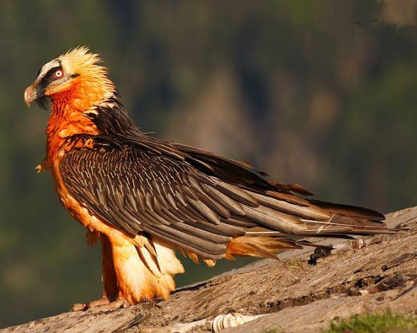
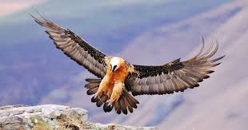
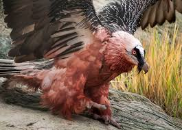

Wing Stretch:
Wing Roll:
Wing Yaw:
Bottom Beak Angle:
Tail Spread:
Left Leg Angle X:
Left Shin Angle X:
Left Foot Angle:
Left Toe Angle:
Right Leg Angle X:
Right Shin Angle X:
Right Foot Angle:
Right Toe Angle:
NOTES FOR GRADER:
Every part of the bird is animated, and the wing motion is anatomically correct
The meat on the bone is made up of non-cube primitives. Three icospheres and a cylinder.
Shift Click: Feed the vulture. Only works when on the ground. The bearded vulture's diet consists of 80% bones
Right Click: Fly up to a tall pillar. Fly back down, as well
Left Click and Drag: Rotate camera
Scroll Wheel: Zoom in/out
Bearded vultures are one of the coolest birds in the animal kingdom.
I studied bird anatomy, watched countless videos, just to make sure I got everything as physically accurate to a real vulture.
I set up a keyframing/animation system for the bird, allowing me to create animation clips and string them together into complete animation sequences.


